← Índice de los 69 tutes de IDA
Tute 54 · Práctica driver + cliente Python
se conecta con: Fuera de alcance
INTRODUCCION AL REVERSING CON IDA PRO DESDE CERO PARTE 54 KERNEL.
PRACTICA DRIVER KERNEL.
Vamos a modificar un poco el ejercicio anterior y además vamos a hacer el programita en user, directamente en Python.
Para ello en la maquina target donde esta el driver corriendo deben instalar Python, yo instale la versión 2.7, y ademas bajarse el instalador de pywin32 el que corresponda a su versión de Python.
https://sourceforge.net/projects/pywin32/files/pywin32/Build%20214/
Como la mía es la 2.7 baje este.
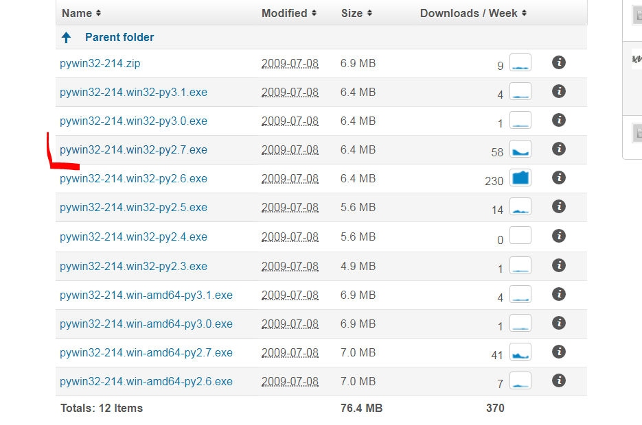
Es un instalador se ejecuta y listo con eso ya podremos correr el script de Python que reemplazara al programa user.
Vemos que el driver ahora tiene dos IOCTL code mas
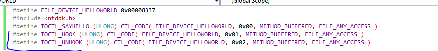
Además del IOCTL_SAYHELLO que ya teníamos , ahora hay dos nuevos que son IOCTL_HOOK y IOCTL_UNHOOK.
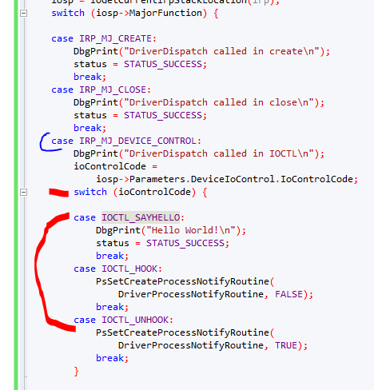
Vemos que dentro del caso que MajorFunction sea IRP_MJ_DEVICE_CONTROL, hay otro switch que tiene los tres cases de los IOCTL.
Vemos que el IOCTL que teníamos antes sigue solo imprimiendo “Hello World”
case IOCTL_SAYHELLO:
DbgPrint("Hello World!\n");
status = STATUS_SUCCESS;
break;
Veamos los otros dos
case IOCTL_HOOK:
PsSetCreateProcessNotifyRoutine(
DriverProcessNotifyRoutine, FALSE);
break;
case IOCTL_UNHOOK:
PsSetCreateProcessNotifyRoutine(
DriverProcessNotifyRoutine, TRUE);
break;
Vemos que usa PsSetCreateProcessNotifyRoutine
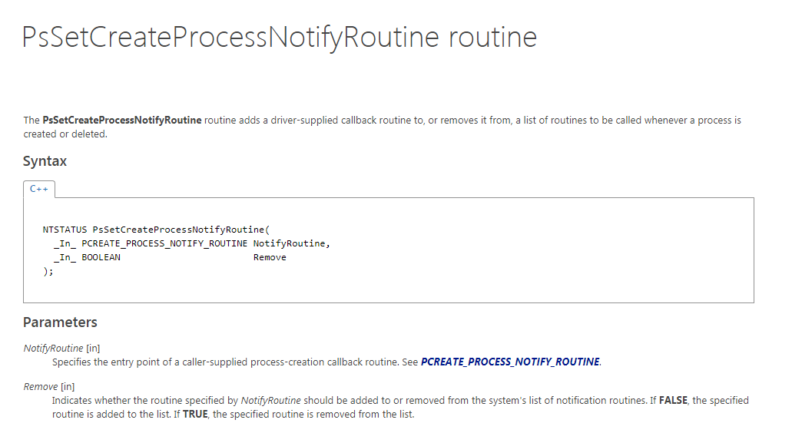
Esta función permite agregar un CALLBACK o sea una función propia, que se disparara cada vez que el sistema arranque o pare un programa, pasándole para activarlo el segundo argumento FALSE, y el primero la función donde saltara.
La función nuestra a la cual saltara se llama DriverProcessNotifyRoutine y si Create es verdadero imprime que hay un proceso nuevo, el PID del proceso parent que lo creo y el del creado.
VOID DriverProcessNotifyRoutine(
IN HANDLE ParentId,
IN HANDLE ProcessId,
IN BOOLEAN Create)
{
if (Create)
{
DbgPrint("Process %d created process %d\n",
ParentId, ProcessId);
}
else
{
DbgPrint("Process %d has ended\n",
ProcessId);
}
}
Y lo mismo cuando el proceso se termina como Create sera falso imprimirá que el Proceso ha terminado con su PID.
Por supuesto hay que asegurarse que antes de detener el driver la función sea deshookeada sino saltara a una función que no existe al no correr mi driver y producira un BSOD.
case IOCTL_UNHOOK:
PsSetCreateProcessNotifyRoutine(
DriverProcessNotifyRoutine, TRUE);
break;
El segundo argumento en TRUE la deshookea y queda el sistema normal nuevamente.
Bueno el código fuente del driver estará disponible recuerden que si lo compilan en Visual Studio deben cambiar en los Settings que sea para Windows 7 y la propiedad Desktop asi como bajar el nivel de rigurosidad de los errores de 4 a nivel 1 o 2.
Bueno ahora viene el script de Python que le enviara los IOCTL al driver cuando este corriendo.
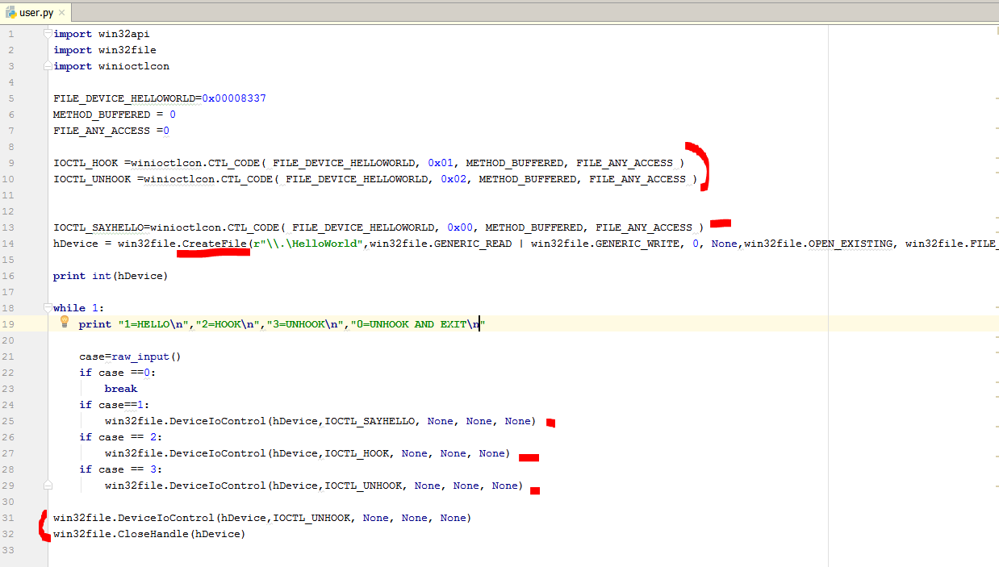
Vemos que es un script pequeño, hay que importar win32api y win32file, ademas de winioctlcon, todo ello viene en el paquete pywin32 que instalamos si no lo instalan les dará error.
IOCTL_HOOK =winioctlcon.CTL_CODE( FILE_DEVICE_HELLOWORLD, 0x01, METHOD_BUFFERED, FILE_ANY_ACCESS )
IOCTL_UNHOOK =winioctlcon.CTL_CODE( FILE_DEVICE_HELLOWORLD, 0x02, METHOD_BUFFERED, FILE_ANY_ACCESS )IOCTL_SAYHELLO=winioctlcon.CTL_CODE( FILE_DEVICE_HELLOWORLD, 0x00, METHOD_BUFFERED, FILE_ANY_ACCESS )
Vemos que la función CTL_CODE que usábamos cuando creamos un ejecutable en C++ para hallar el IOCTL, en Python la importa winioctlcon, con ello lograremos hallar los tres IOCTLs.
CreateFile
Luego tenemos el llamado a CreateFile
hDevice = win32file.CreateFile(r"\\.\HelloWorld",win32file.GENERIC_READ | win32file.GENERIC_WRITE, 0, None,win32file.OPEN_EXISTING, win32file.FILE_ATTRIBUTE_NORMAL, 0)
En este caso en el nombre del driver hay que poner barra invertida simple en vez de doble, el resto es similar las constantes para los argumentos están en win32file.
Y luego viene la llamada a DeviceIoControl hacemos que el usuario tipee una tecla y según lo que elije le enviamos el código correspondiente, si elije cero, antes de salir deshookea la función para evitar pantallas azules.
while 1: print "1=HELLO\n","2=HOOK\n","3=UNHOOK\n","0=UNHOOK AND EXIT\n" case=raw_input() if case ==0: break if case==1: win32file.DeviceIoControl(hDevice,IOCTL_SAYHELLO, None, None, None) if case == 2: win32file.DeviceIoControl(hDevice,IOCTL_HOOK, None, None, None) if case == 3: win32file.DeviceIoControl(hDevice,IOCTL_UNHOOK, None, None, None)win32file.DeviceIoControl(hDevice,IOCTL_UNHOOK, None, None, None)win32file.CloseHandle(hDevice)
Con ese script podríamos manejar el driver enviándole códigos IOCTL diferentes, probemoslo.
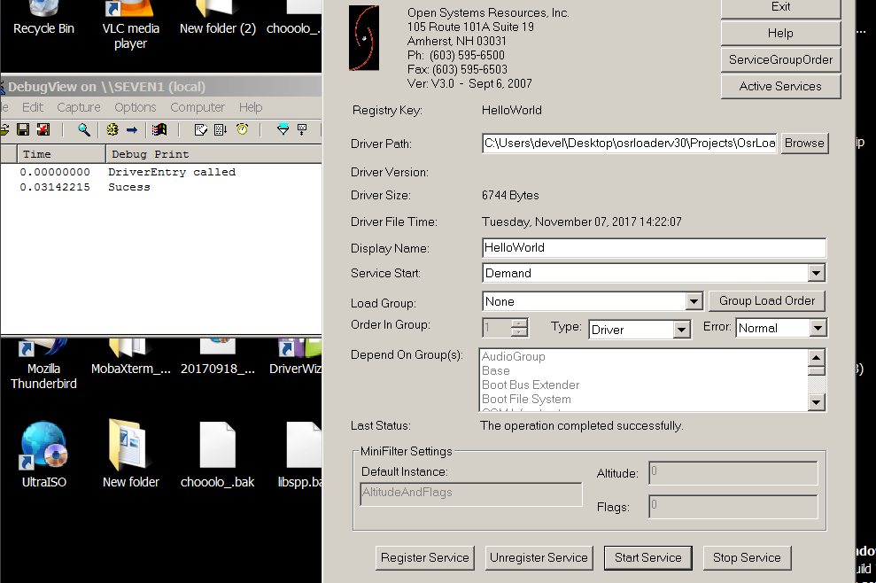
Arranco el sistema target debuggeando y arranco el driver con el OSRLOADER, y lo dejo corriendo ahora usare el script de Python a ver si va.
HANDLE
Vemos que despues que nos imprime el handle del driver salen las opciones para elegir.
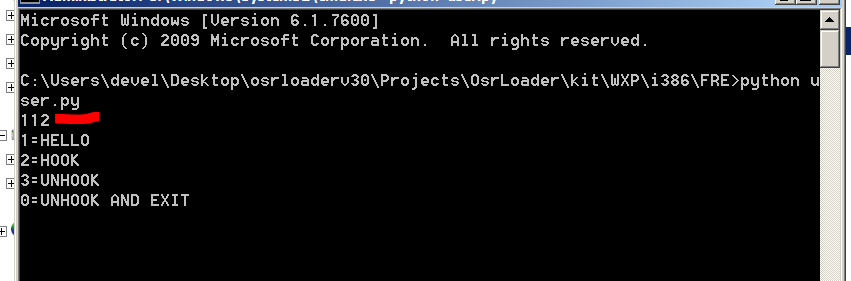
Si apreto 1 no funciona que paso?
case=raw_input()
1
case
type(case)
Out[6]: str
Ahh lo que retorna raw_input es una string y lo estamos comparando con un entero, cambiemos eso.
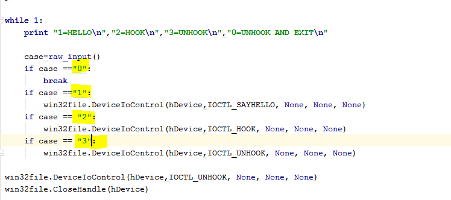
A ver ahora
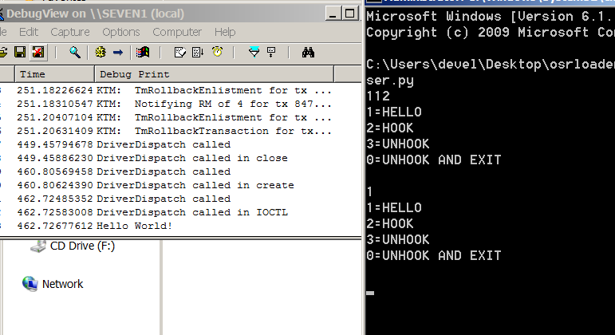
Ahora si, cuando tipeamos 1 nos muestra “Hello world” hookeemos ahora apretando 2.
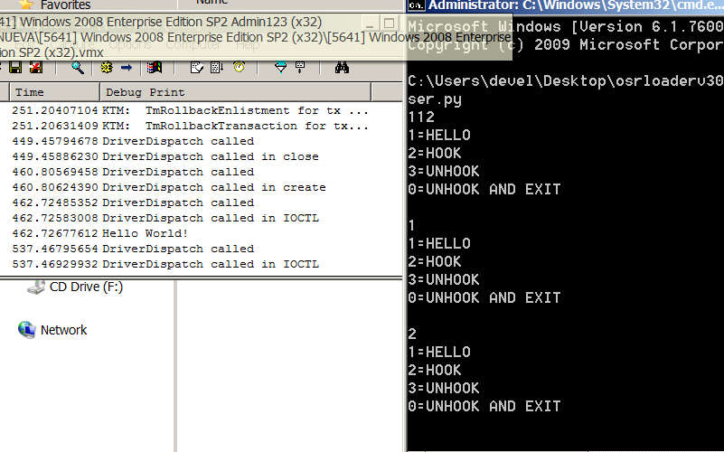
Ahora arranquemos algunos programas en la maquina
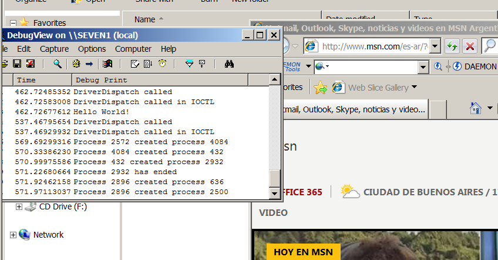
Vemos como nos loguea los procesos que arrancan y se cierran en mi caso arranque el Internet explorer
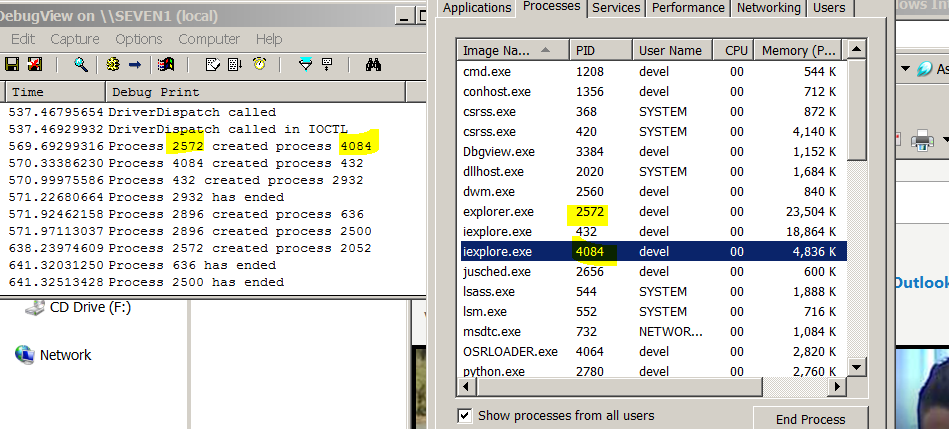
Ahí esta el PID del IE es 4084 y el padre es el Explorer al arrancar con doble click, cualquier proceso que arranca en la maquina o se detiene se logueara alli, ahora cerrare el IE.
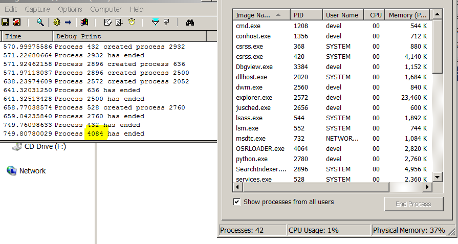
Bueno funciona ahora deshookeemos con 3, vemos que no se loguean mas los procesos que abrimos y cerramos.
Con respecto al reversing es similar al caso anterior.
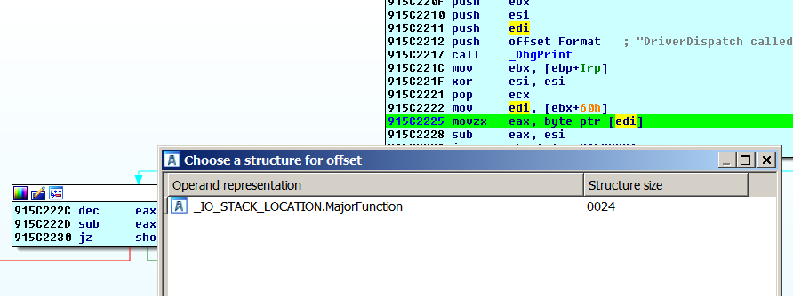
En el Dispatch vemos en este caso EDI que es Irp + 0x60, tendrá la dirección de la estructura _IO_STACK_LOCATION, ademas de poner un breakpoint alli, una vez que sincronizamos las estructuras necesarias en LOCAL TYPES, nos aparecerá que ese campo es MajorFunction
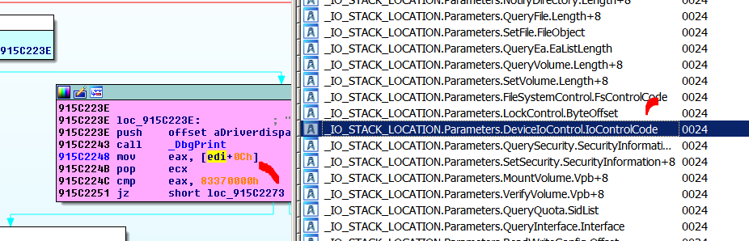
En el caso cuando MajorFunction vale 0xE o sea que estamos usando DeviceIoControl, apretamos T y de todas las opciones elegimos esa, que es para cuando se usa DeviceIoControl.
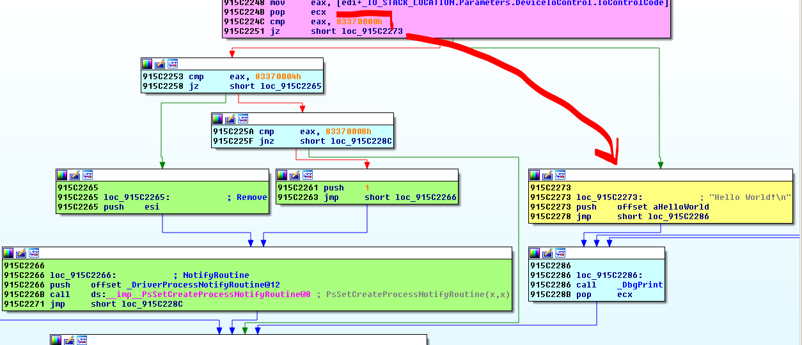
Vemos que cuando es IOCTL_SAYHELLO va al bloque amarillo que imprime HELLO WORLD, en los otros dos casos va por los bloques verdes en el caso IOCTL_HOOK hace PUSH ESI que es cero para pasar el argumento FALSE a la api PsSetCreateProcessNotifyRoutine@8 y en el caso de IOCTL_UNHOOK hace PUSH 1 que es TRUE.
El otro argumento es el offset de la función donde saltara.
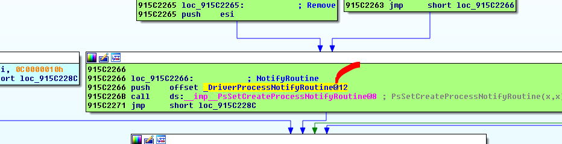
Si hacemos click alli iremos a la misma.
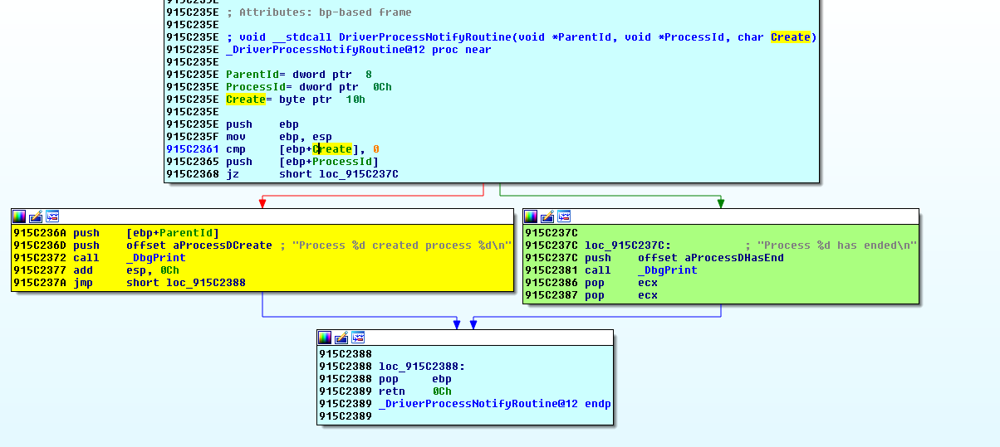
Alli vemos si Create es falso o sea CERO salta a PROCESS (PID) HAS ENDED y si es verdadero PROCESS (PID) CREATED PROCESS (PID)
Si ponemos un breakpoint aquí, parara cada vez que arranquemos un proceso despues de haber apretado 2 en el script de Python para HOOKEAR.
Les dejo como tarea poner los breakpoints en esta función y en el Dispatch y tracear para chequear lo que hemos dicho reverseando.
Hasta la parte siguiente
Ricardo Narvaja